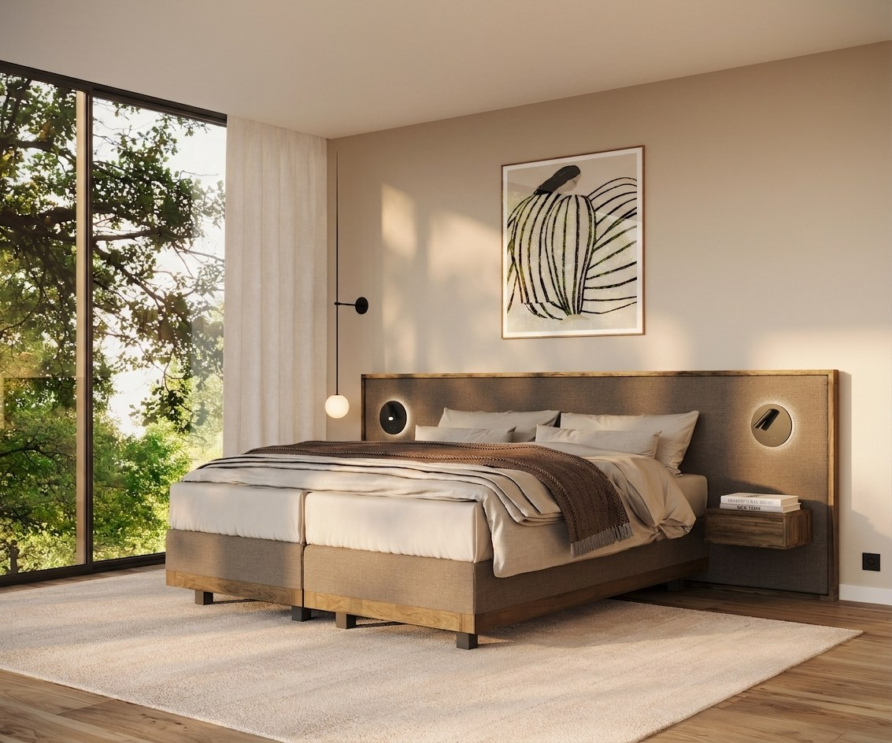

Collecties
Vijf productlijnen. Eén belofte: rust.
Van de fundering tot het laatste kussen — elk onderdeel van je bed draagt bij aan je nachtrust. Ontdek onze vijf collecties en ervaar ze zelf bij een van onze dealers.

Boxsprings01 — Boxsprings
Een stabiele basis, tot in de puntjes afgewerkt.
Al onze boxsprings zijn voorzien van 5-zone pocketvering — de ideale basis voor elke Ultima-matras. De collectie bestaat uit vier lijnen — Forma, Forma Design, Stricta en Suprema — elk leverbaar in meer dan 100 stoffen en te combineren met ieder Ultima-hoofdbord.
Bekijk alle boxsprings02 — Matrassen
Ondersteuning die zich aanpast aan jouw lichaam.
Onze matrassencollectie bestaat uit vier series — Initio, CumLaude, Summum en Havea — elk met een eigen opbouw en comfortkarakter, zodat er voor iedere ligvoorkeur een passend model is.
Bekijk alle matrassen Matrassen
Matrassen
03 — Topmatrassen
Extra comfort, bovenop je bestaande matras.
Onze topmatrassencollectie kent, net als de matrassenlijn, een Initio- en een CumLaude-variant — elk in meerdere vullingen, voor wie het comfort van een bestaand matras wil verfijnen.
Bekijk alle topmatrassen Ledikanten
Ledikanten
04 — Gestoffeerde ledikanten
Tijdloze silhouetten, volledig gestoffeerd.
Onze gestoffeerde ledikanten combineren rustige, verfijnde vormen met een tijdloze uitstraling. Volledig gestoffeerd en te bestellen in iedere maat, met een keuze uit meer dan 100 stoffen — zo sluit een Ultima-ledikant altijd naadloos aan bij jouw interieur.
Bekijk alle ledikanten05 — Kussens
De laatste, onmisbare laag van comfort.
Onze kussencollectie bestaat uit vier modellen — AW, Discus, Atlas en Balans — elk met een vulling die past bij jouw slaapvoorkeur: verkoelend traagschuim of 100% natuurlatex.
Bekijk alle kussens Kussens
Kussens
Stel je eigen slaapcomfort samen
Onze dealers helpen je graag de juiste combinatie van boxspring, matras, topmatras, ledikant en kussens te vinden.
Vind een dealer